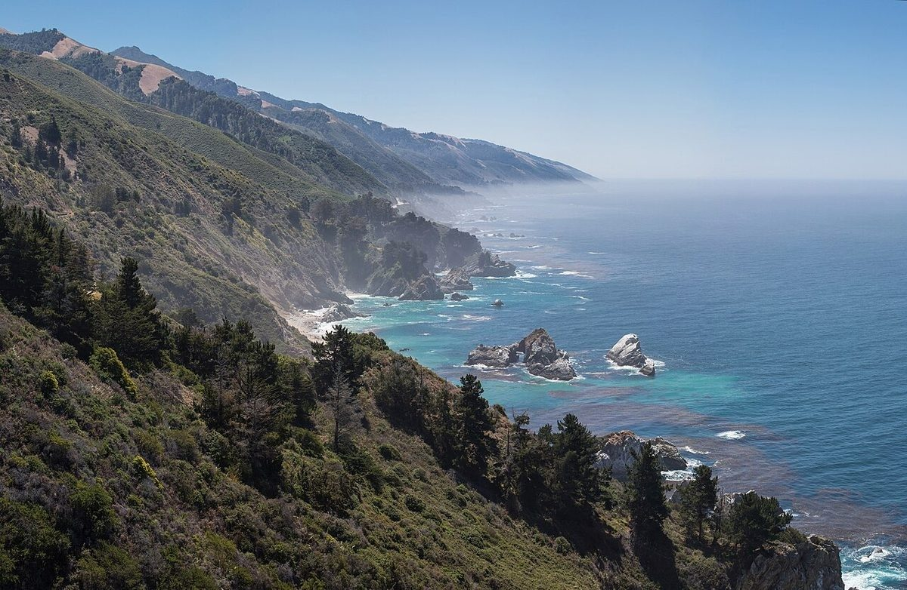
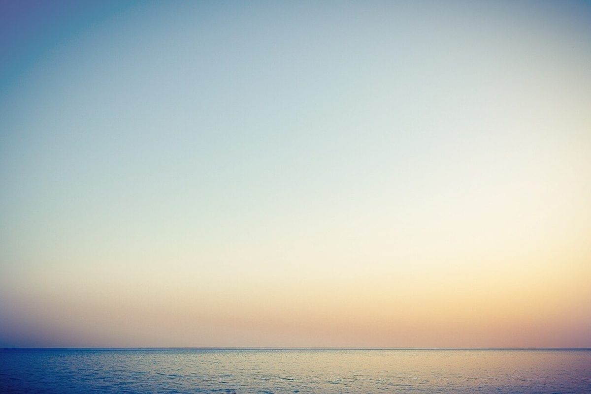
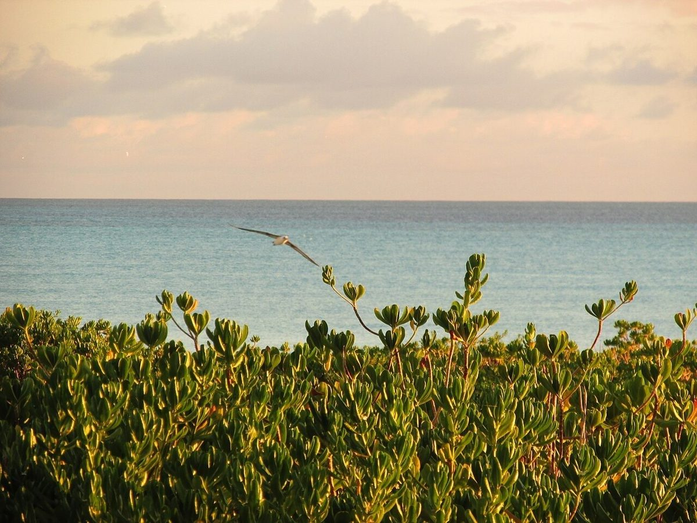
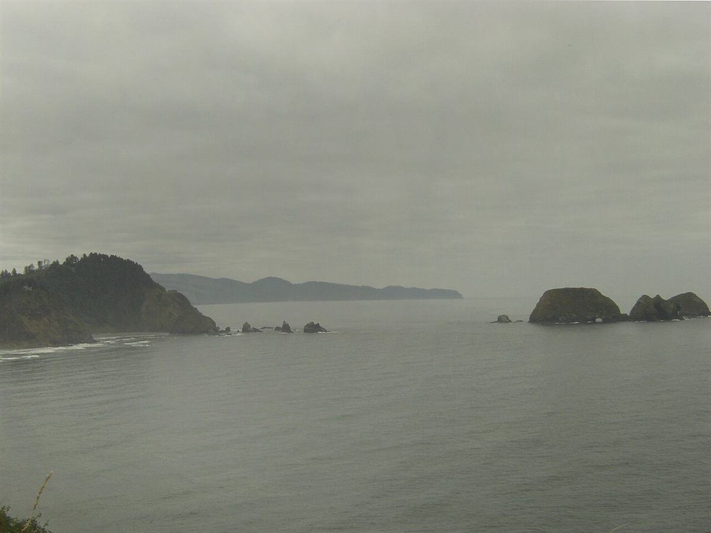
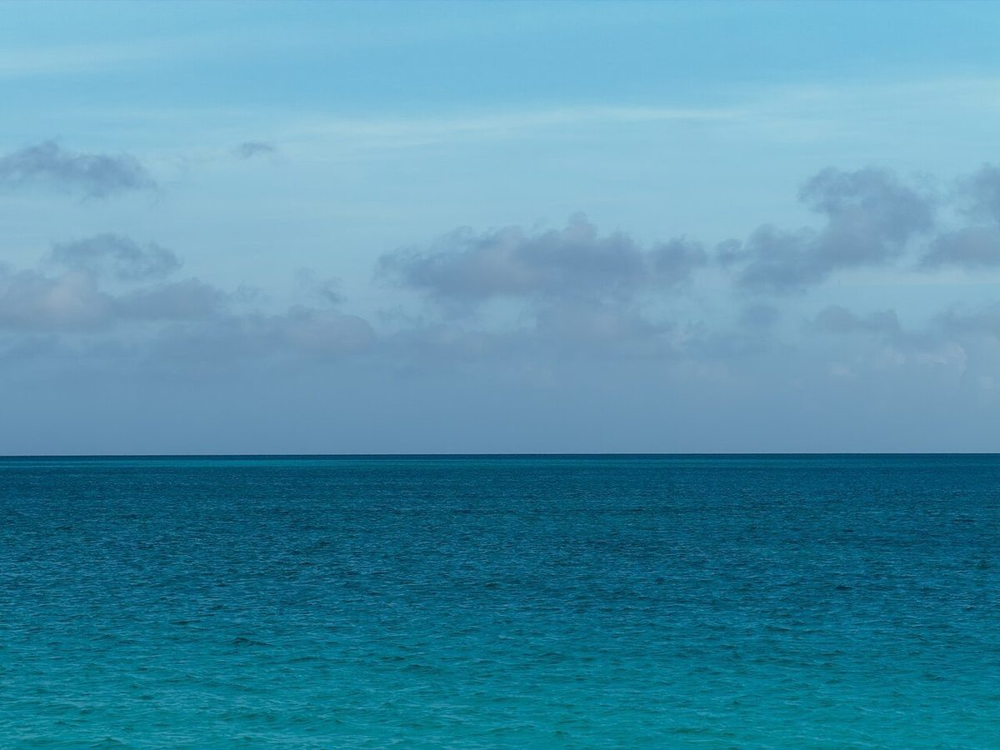
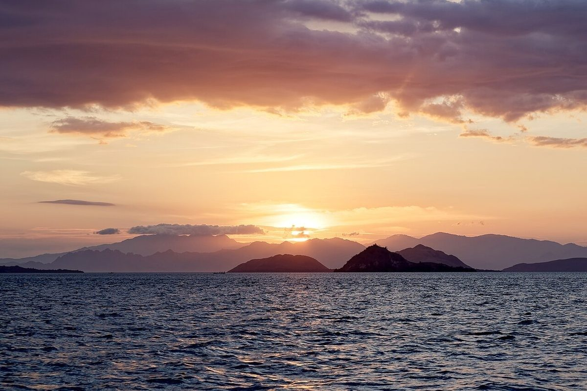
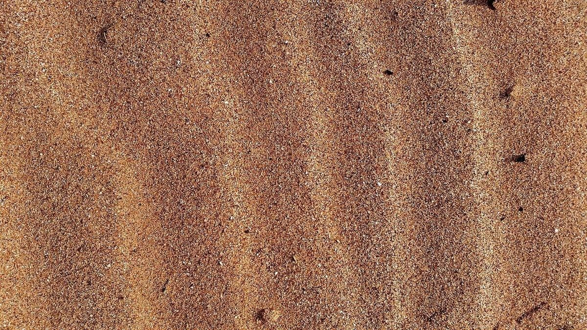
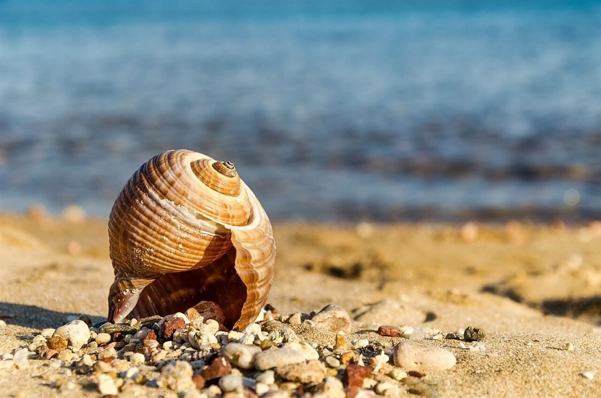

制作側の連想
「SEA BASE」から、羅針盤の八方位
店名の由来は分かりません。制作側は「SEA BASE(海の拠点)」という英字から、出かける前に方角をたしかめる羅針盤を連想しました。そこでこのサイトは、方位を表す数字(000°、045°…)をページの番号にし、八つの方位に海のイメージを並べる作りにしています。制作側の連想で、お店の理念・由来とは無関係です。
八方位のイメージ
八つの方角、八つの海。
写真は五島市三井楽町の風景ではありません。方位ごとの色・時間帯のイメージで選んだ、国外・撮影地不明のフリー素材です。

NW315° 岸 
N000° 凪 
NE045° 朝 
W270° 霧 
E090° 青 
SW225° 夕 
S180° 砂 
SE135° 貝
ご案内
お店のこと(確認できたものだけ)
| 所在地 | 〒853-0601 長崎県五島市三井楽町濱ノ畔1278-4 |
|---|---|
| 電話 | 0959-84-3686 |
| 営業時間 | 準備中 |
| 定休日 | 準備中 |
| ご予約 | 準備中 |
| 駐車場 | 準備中 |
| SNS | Instagram @seabase_shiraragahama |